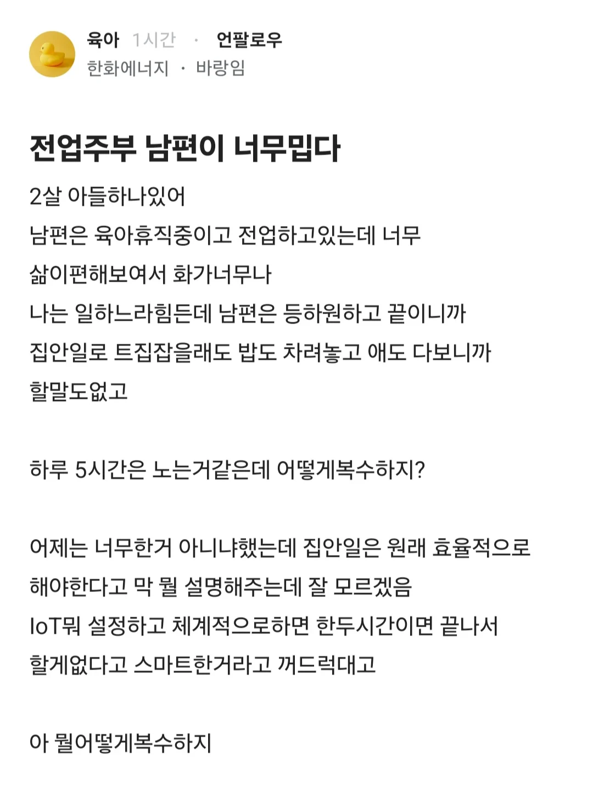

전업주부 남편이 집안일 너무 쉽게 해서 짜증난다는 블라인
댓글
가사노동이든 직업적 노동이든 (비숙련의 경우)여자들이 남자들보다 더 피로를 느낄 수 밖에 없다. 체력 자체가 차이가 있으니까.
이전 시대에서 여성이 가사노동에 더 적합하다고 알려졌던 건 사회 전반에 걸친 인식이 남자는 가사노동과 거리가 멀고 여자가 전담하는걸로 되어있다보니 심리적 거리감에 의해 차이가 났던건데, 지금은 오히러 딸바보 등의 영향으로 독립하기 전에 집에서 가사노동을 하는 경우도 적고, 오히러 남자들이 군대나 자취 등으로 가사노동에 더 숙련되어 있는 경우가 많음.
잘해도 지랄이야
효성햄 시원하이
걍 남자여자 바꿔서 쓴 템플런같은데
미친년인가 진짜??
남편이 저 글 봤으면 좋겠다
이게 대체 무슨 심보야
이런거보면 진짜 한국여자랑 결혼하는게 스파이더마인밭으로 뛰어드는 질럿밖에 안되는거같음.
아이어를 위하여!
이래서 여자들이 집안일 힘들다고 하는거구나
개좆도없는거 다 아니까 포장하지 ㄹㅇ
진짜 집안일 힘들다는거 뭐가 힘들다는건지 모르겠음
세탁기가 해줘 건조기가 해줘
청소기가 해줘
로청 식세기 까지 있으면 하루 10분만 해도 어느정도 깨긋하게 유지되고
한시간정도 투자 하면 존나 깨끗하게 살지 않나??
옛날 어머니세대까지는 그런데 3040한녀들이 그딴소리하면 쳐맞아야해
사람마다 청소 정도에 대한 생각이 다 다르니 쉽다 어렵다 말할 수 없고 결국 집안일이 힘들다면 게으르거나, 강박증이 있거나 둘중 하나지 뭐.
그냥 사람이 이기적이라 남녀떠나서 자기가 가장 힘든거임 원래 ㅋㅋㅋㅋㅋㅋ
걍 여자욕먹일려는 남녀주작글
혼자 사는데 로청 식세기 음쓰처리기 건조기 뭐 다 해주니까 집안일 할 게 없음 진짜
나도 전업주부 하고싶다
저런년도 한화다니는데..
남녀갈라치기 주작글임
아기 더 어릴때 휴직했었고, 남편은 어린이집 보내고있으니 더 힘들었을건 맞긴 한데ㅋㅋㅋㅋ 남편 편하다고 화나는게 웃김
와이프 새벽출근하면 종종 딸 둘 등원 혼자시켜봤는데 제일 귀찮은건 애들 옷입히는거랑 머리묶어주는거밖에 없음 전날 와이프가 옷골라놔도 애가 싫다하면 그냥 입고싶다는거 입혀버림 입씨름하기싫어서 ㅋㅋㅋ 아 이제 복직이다 으으 1년동안 로또 당첨이 안되냐..
효율 구리게 육아해놓고 남편이 효율 좋게 하니까 지랄 ㅋㅋ